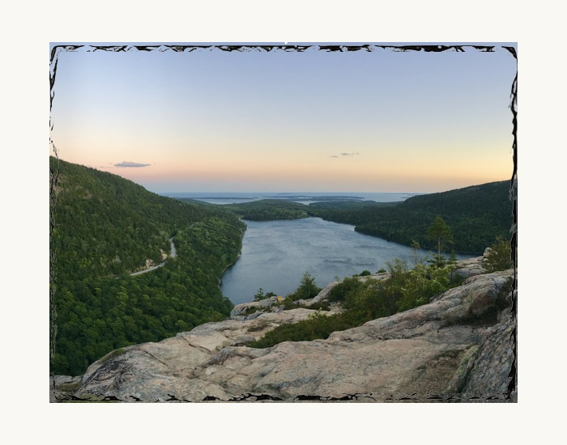

Acadia
Photo gifts · made personal
Your favorite people, places and four-legged friends. Printed on natural slate, ready for a desk, shelf or a very happy grandparent.
Find your size ↓From $29.99 · Display supports included

El Capitan frames the valley in this landscape photograph from Tunnel View.
8 × 10 inch photo slate · $49.99
Display supports included.
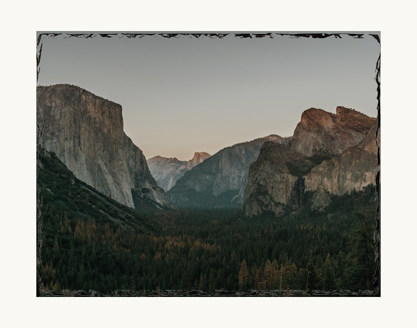
8 × 10 inches · $49.99 each · Landscape with display supports. Digital previews on the supplier’s slate.

Acadia
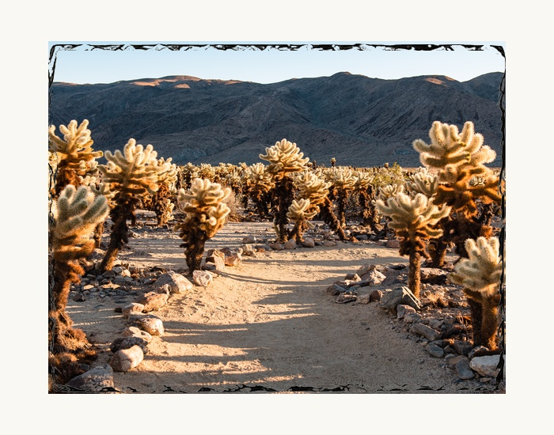
Joshua Tree
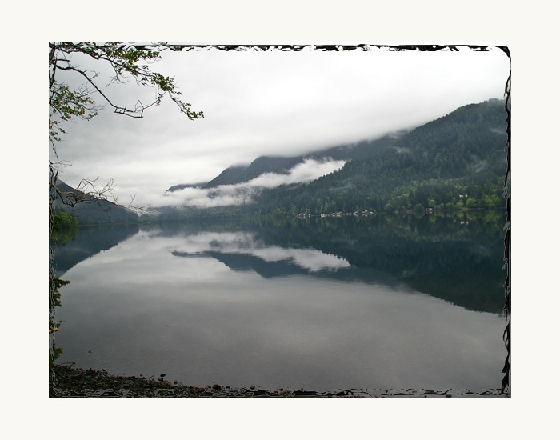
Olympic
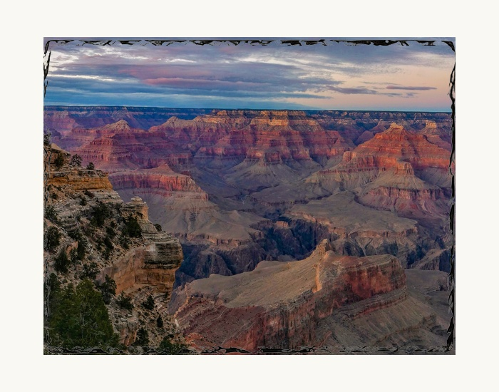
Grand Canyon
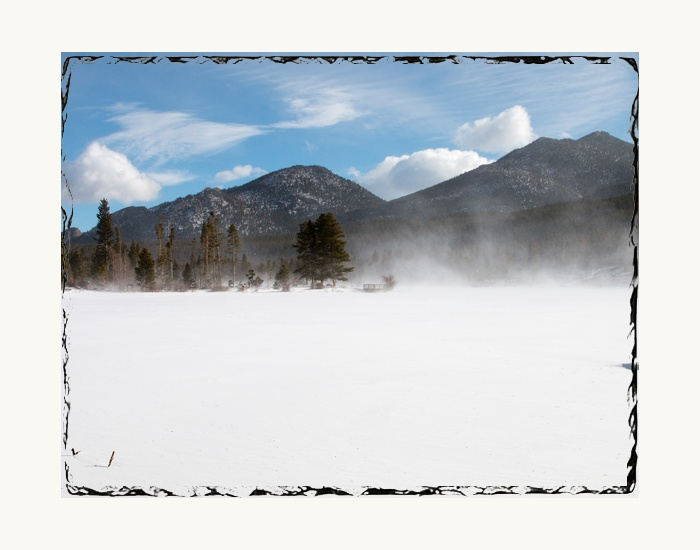
Rocky Mountain
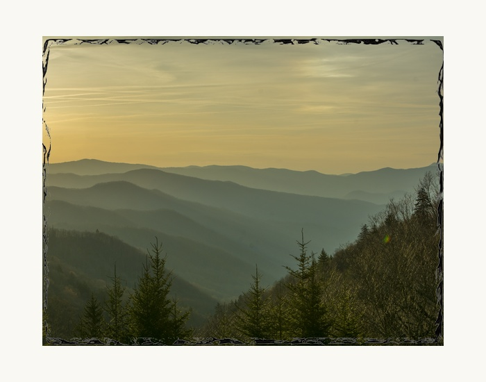
Great Smoky Mountains
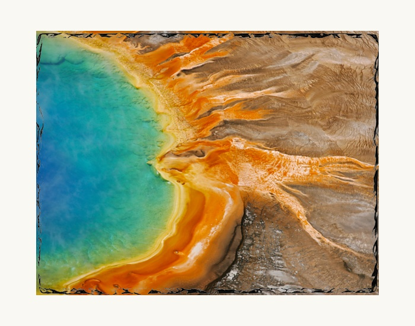
Yellowstone
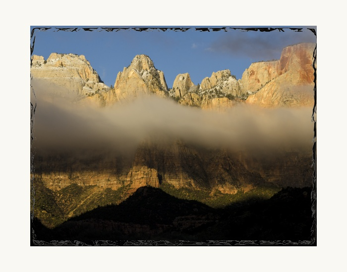
Zion
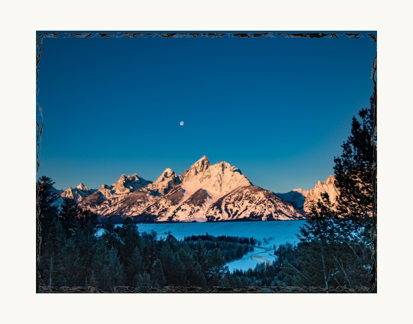
Grand Teton
See the slate itself
This supplier view of the 8 × 10 slate shows the coated front, natural stone back, textured edge and included display stands.
Each piece of stone has its own edge. The family examples on this page are digital previews; your own photo is printed on your slate.
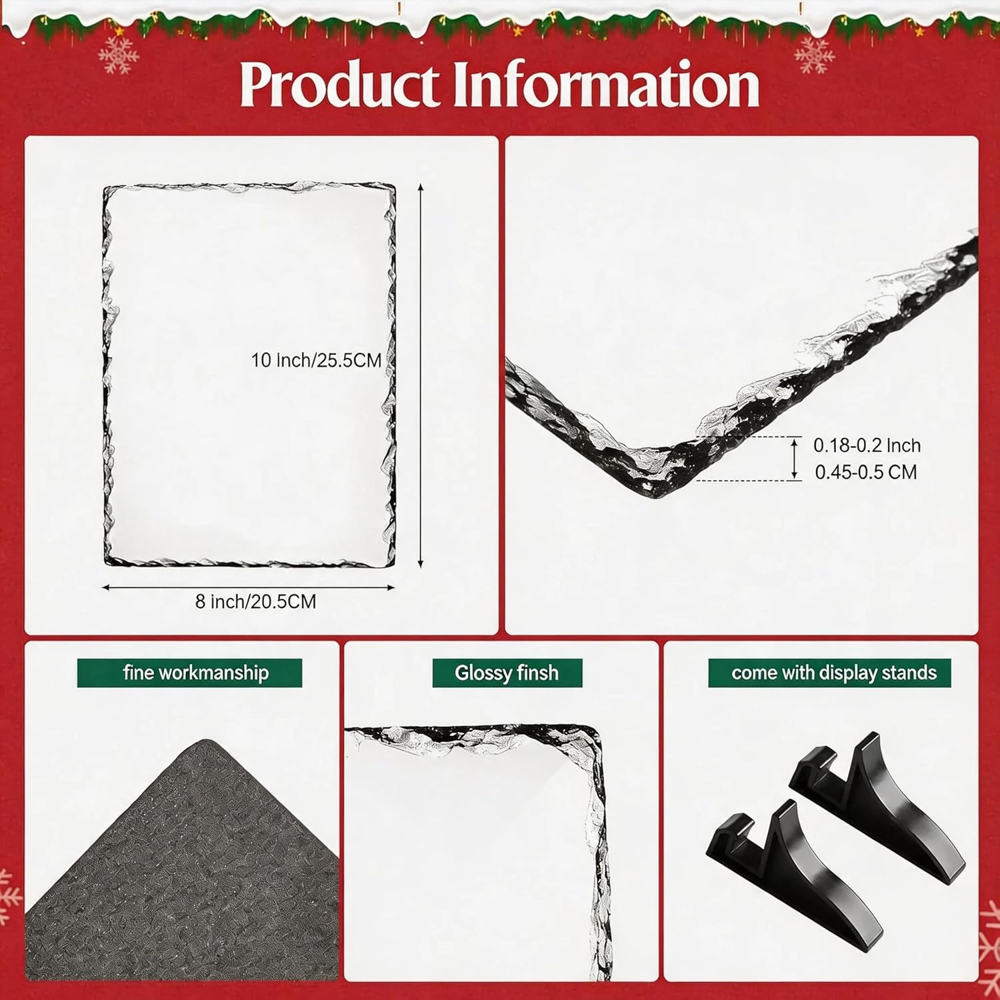
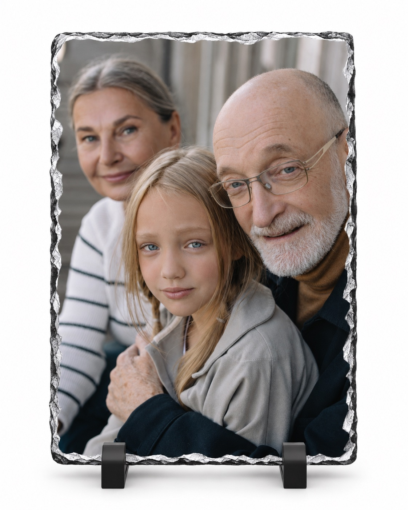
For the people who mean everything
A family hug. A new grandbaby. That afternoon everyone was together. Turn a photo from your phone into a gift they can keep in view.
Bring your own photo. We’ll help choose the orientation and crop before printing.
Choose a slate size ↓Three sizes. One thoughtful gift.
Every slate includes display supports, one photo, basic cropping, and an optional name or date. Natural stone edges vary from piece to piece.
Prices before applicable tax. Order at the counter; your team member will confirm stock, photo placement and pickup timing.
Show this screen to your team member and bring the original photo on your phone. We’ll help with the crop and confirm the design with you before printing.
This is a selection summary, not a submitted order or reservation. No photo has been uploaded and no payment has been taken.
Start with the original file on your phone. Family portraits, pets and wedding photos make beautiful gifts.
Choose a size. Add a name or date if you like. Your team member will help you check the crop.
Confirm your design at the counter, then arrange pickup. Each slate comes with supports for display.
Visit a Keepsake counter at CPR Cell Phone Repair in West Chester, PA; Pottstown, PA; or Newark, DE. Ask your team member about availability and pickup timing.